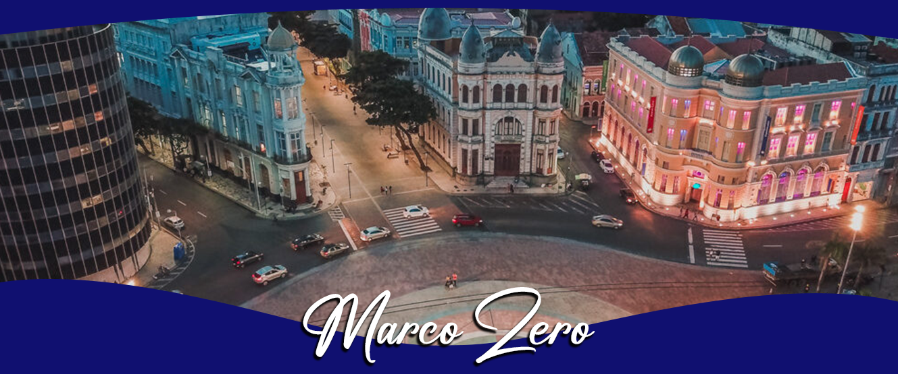
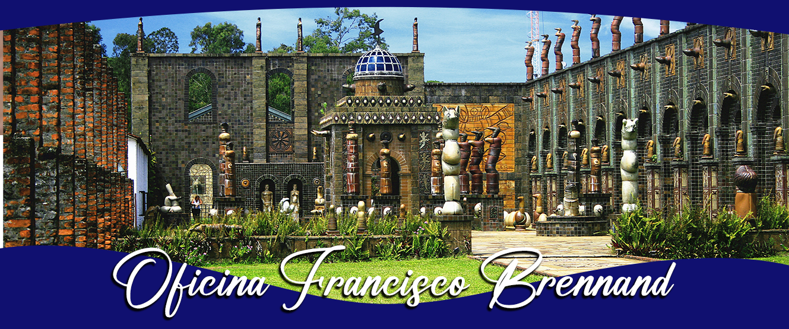
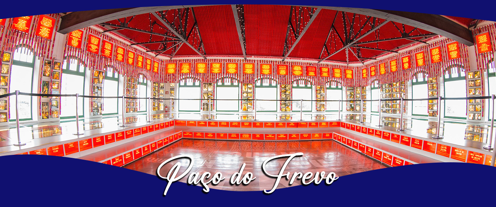
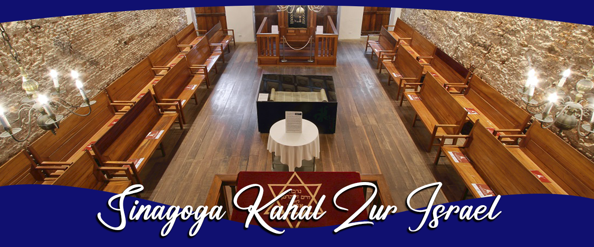
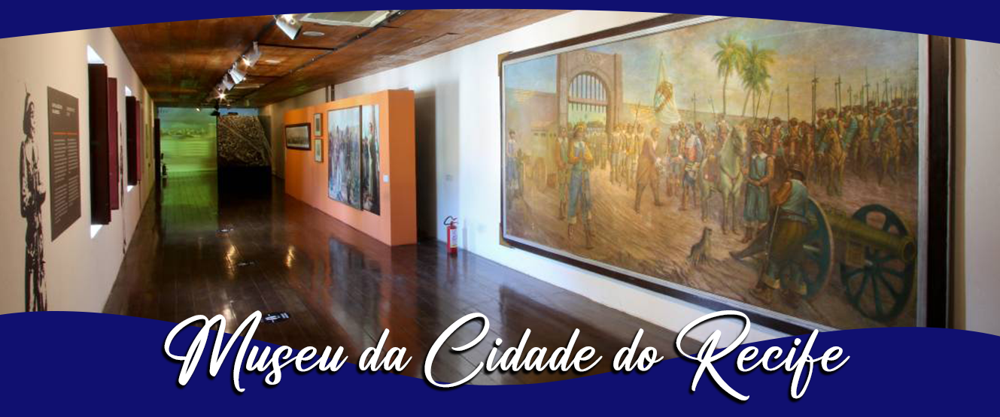
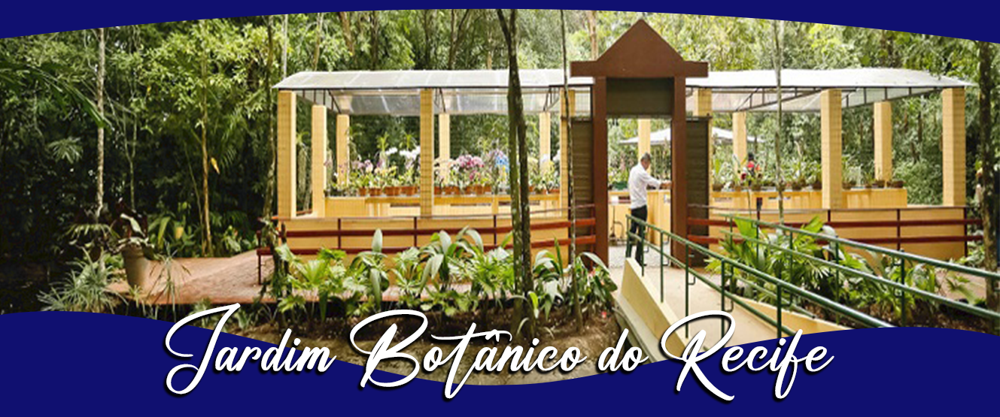
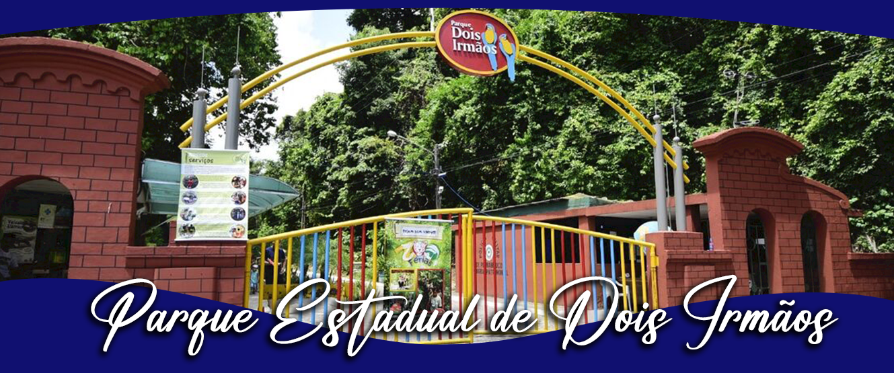
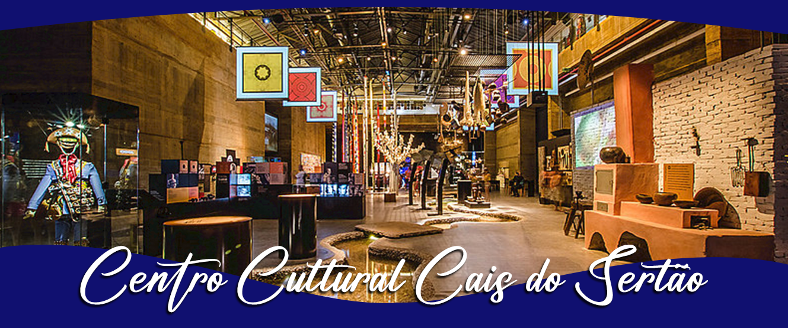

A Praça Barão do Rio Branco, mais conhecida pelos moradores e turistas como Praça do Marco Zero, é um dos pontos turísticos obrigatórios de quem visita a capital pernambucana Recife – PE. Localizada no Centro Histórico, mais precisamente na região do Recife Antigo, a Praça do Marco Zero abriga a cultura e a história da cidade. A Praça do Marco Zero recebe esse nome por ter sido o ponto inicial para a formação e fundação da cidade de Recife.

A história da Oficina Brennand teve início em 1971 nas ruínas da Cerâmica São João da Várzea, uma olaria do início do século XX. Em razão disso, o que era uma antiga fábrica de tijolos e telhas herdada do pai do mestre Francisco Brennand, virou o seu grande atelier e hoje é um conjunto arquitetônico monumental de grande originalidade. Como resultado, a obra se associa à arquitetura para dar forma ao incomparável universo da arte de Brennand.

O Paço do Frevo é um espaço cultural dedicado à difusão, pesquisa, lazer e formação nas áreas da dança e música do frevo localizado na cidade do Recife, capital de Pernambuco, Brasil. Surgiu através de uma parceria entre a Prefeitura do Recife, a Fundação Roberto Marinho, o IPHAN e o Governo Federal.

É a primeira sinagoga das Américas, fundada no século 17 no período da ocupação holandesa. Atualmente funciona como centro judaico de Pernambuco, nele sendo retratado um importante período da história de Pernambuco com suas escavações arqueológicas, apresentando o mikvê (banheira para rituais de purificação). Ainda possui exposições e documentos sobre os judeus em Pernambuco.

Instalado no Forte das Cinco Pontas em 1982, o Museu da Cidade do Recife abriga acervo de documentos iconográficos de extrema importância para a preservação da história urbana, cultural e social do Recife. São mais de 250 mil imagens, 2.560 títulos, entre livros e revistas, 1.898 peças digitalizadas, incluindo mapas, plantas e projetos de arquitetura, 146 azulejos dos séculos XVII ao XIX, três portas e duas imagens de santos pertencentes à Igreja dos Martírios, que foi demolida para a abertura da Avenida Dantas Barreto. O Museu da Cidade do Recife é um espaço para visitação, pesquisa e realização de eventos e atividades culturais. Faz parte da Fundação de Cultura da Prefeitura do Recife.

O Recife conta com um espaço ambiental que agrega lazer, ciência e educação, totalmente estruturado para receber turistas e moradores. O Jardim Botânico, localizado no Km 7,5 da BR 232, no Curado, foi totalmente requalificado em dezembro de 2013. O investimento foi mais de R$ 2 milhões. Entre os atrativos do Jardim estão trilhas ecológicas, orquidário, jardim sensorial, jardim de flores tropicais, jardim de plantas medicinais, jardim de palmeiras, meliponário, viveiro florestal, coleção de cactáceas, coleção de bromélias e núcleo de educação ambiental. O espaço é um dos últimos remanescentes de Mata Atlântica na cidade.

A história do Parque Estadual de Dois Irmãos remonta ao início do século XX, quando, em 1916, foi criado Horto Florestal de Dois Irmãos. A medida tinha o objetivo de proteger uma valiosa área de Mata Atlântica que abrigava o manancial com as águas de melhor qualidade para abastecer a capital pernambucana: o Açude do Prata. Inicialmente administrado pela Prefeitura do Recife, o Horto só passou à Fundação do Instituto de Pesquisas Agronômicas – IPA, do Governo de Pernambuco, em 1935.

Construído no local de antigos armazéns do Porto do Recife, o Cais do Sertão oferece aos visitantes exposições temporárias e acervo permanente, com referências à cultura sertaneja da região Nordeste, com experiências sensoriais e arquitetura inovadora, em edificação que exprime em seus traços a união do litoral com o sertão.